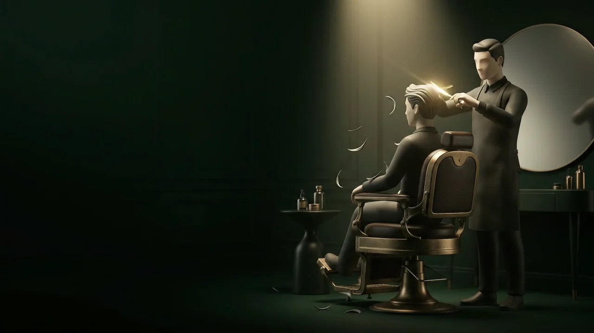

Antes da técnica,
vem entender você.
Uma pausa. Um olhar.
Cada detalhe encontra o seu lugar.
TRADIÇÃO NO GESTO. PRECISÃO NO DETALHE.
O tempo desacelera.
O cuidado ganha forma.
O cuidado começa
antes do primeiro corte.

Uma pausa. Um olhar.
Cada detalhe encontra o seu lugar.
O gesto é decidido.
A linha é precisa.
Nada está ali por acaso.
O último gesto encontra
o seu equilíbrio.
ESTUDO DE MATERIAL / A MESMA ASSINATURA
A mesma luz. Duas interpretações.
Observe o metal, a profundidade e o reflexo.
Precisão gráfica. Leveza.
Carregamento sob demanda.
CENA C / O PRÓXIMO CAPÍTULO É SEU